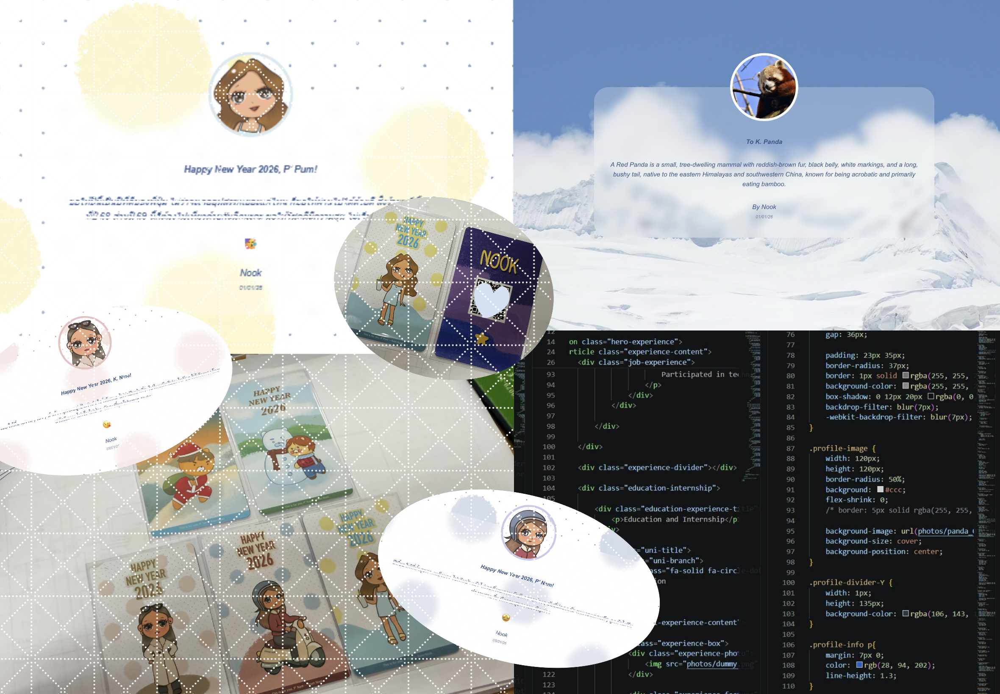

" Beyond engineering, I explore creativity through drawing, storytelling, and small web projects. Shaped by stories that range from light and tender to deep and profound. "

Drawing & Sticker Design
Creative Hobby
I enjoy drawing and creating custom stickers, which I have shared as New Year gifts and birthday gifts for colleagues and for ONCE at TWICE concert.

Creative Web Experiences
Personal & Interactive Projects
Alongside this, I build creative web projects, such as a personalized New Year greeting website shared through QR codes, turning simple moments into small interactive experiences.
Manga & Storytelling
Reading & Inspiration
Through reading, I explore stories that range from light romantic moments to deeper narratives like Attack on Titan and Berserk.